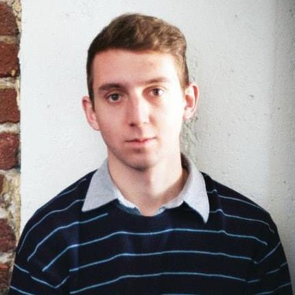

MEDIA RECAP
COMPLETE LIST OF PROJECTS ON: HACKER LEAGUE
PHOTOS BY MARYA FIGUEROA: Flickr Stream
PHOTOS BY JANICE GO: Flickr Stream
KSBY NEWS ARTICLE: Cal Poly Hackathon generates new apps and websites
CLA PRESS RELEASE: Hackathon Showcases Student Design and Innovation Feb. 8
Innovation Quest 2014
Continue working on your Hackathon projects or create new ones at Innovation Quest 2014. Innovation Quest (iQ) is an annual competition hosted in cooperation with the Cal Poly Center for Innovation & Entrepreneurship (CIE). It's put on for Cal Poly students and designed to help fund student startups and encourage innovators to pursue their ideas. If you have an idea, innovation, creation, or particular skill to contribute, iQ is looking for you! iQ wants to provide you with the resources you need to develop your idea, your business, and your future.
Top teams receive amazing awards:
First Place: $15,000
Second Place: $10,000
Third Place: $5,000
All ideas are welcome, and it is completely free to apply. iQ wants you to succeed, and we are holding three workshops prior to the competition designed to connect you with the resources and people you need to make your entry a success. Join us for our first workshop on Thursday, February 20th, at 6 pm in Bldg 2, Room 206. Pizza will be provided!
If you have any more questions, please feel free to email them to iQCalPoly@gmail.com, or check out our website: http://innovationquest.org/calpoly.
To stay updated on events, sign up for our mailing list at: http://innovationquest.org/calpoly/contest/contest_flyer
INFORMATION
Are you a software engineer, web developer or graphic designer? Are you a marketer, or startup enthusiast? Come spend 12 hours to build a mobile app, web site or project that will make life better at Cal Poly and your community. It’s a day of hacking where you can think up ideas, pitch concepts to each other, join into teams to quickly build as much as you can, and present the results.
The Cal Poly Hackathon is a great way for you to make new connections, learn skills, and get feedback from mentors and your peers. It will be a creative, supportive environment – OK, maybe just a little bit competitive too. Bring your energy and enthusiasm and let’s build together.
During the Cal Poly Hackathon we will have experienced mentors on hand to help you with different technologies for development and design. On Saturday evening everyone will demo their product/website/mobile app and receive feedback from an expert panel. After voting by the judges, and by all of you, we will celebrate with some fun prizes.
Many past hackathons have led to job opportunities, internships and student teams forming start ups of their own, and we hope to see you join that notable list! The Cal Poly Hackathon is also a great résumé builder!
The event will be held in the Bonderson Engineering Center at Cal Poly in San Luis Obispo. You will need to be there on Friday evening February 7th for the kickoff night (6-8 pm). Bring your ideas and we will help everyone form teams. Hack on your project starting that Saturday morning and show your demo on Saturday evening. See the schedule below for more information. Plenty of food and refreshments will be provided, just bring your own computer.
How to Sign Up
Help us get the right mix of participants by picking the right ticket: if you can code, pick the Developer/Engineer ticket (50 available). Can you do HTML or visual design but not code? Pick the Designer/UX ticket (50 available). Content developer, marketer or startup enthusiast? Pick "Marketer/Idea Person" (20 available). There is no charge to attend but we can only fit a limited number of people so sign up early!!
Sign up at: design-dev-hackathon.eventbrite.com
SPONSORS
Thank you to all of our great sponsors that could make this event possible.
SPONSORS
IN-KIND SPONSORS
PARTNERED WITH
MENTORS
KEVIN WEEKS
The first thing you will notice about Kevin Weeks is his height. He's 6'8". But Kevin is so much more than just some tall guy. He's a Cal Poly graduate in Graphic Communication that loves the web. He has spent the last 3 years immersing himself in web design, learning as much as he possibly can. And it paid off. He currently works as a Web Designer/Developer at Couto Solutions in sunny San Luis Obispo. Kevin has a passion for sharing knowledge and helping people learn new things. Join him for a workshop on a quick and easy way to preprocess Sass and LESS into css, combining and minifying javascript files, and losslessly optimizing images.
TAYLOR MCINTYRE
Taylor is a passionate full-stack developer with particular interest in front-end engineering. He is most known in the Graphic Communication department for holding and growing the Web Development Manager position at UGS. He also developed the application that won the top prize at last years hackathon hosted by Evernote, so he knows that it takes to win. Taylor is currently a UI developer for Rosetta, where he contributes to the development of scalable and rich web applications that thousands of people use every day. See some of his work at taylorcode.com.
ELI MCNUTT
Eli McNutt is a recent graduate from Cal Poly with a B.S. in Graphic Communication. He currently lives in San Francisco where he works as a Project Manager for West Agile Labs, a web and mobile application development firm. Along with managing a team of international developers, Eli uses his background in UX/UI to build out product designs and help with front-end development for consumer and enterprise applications.
ALI TORBATI
 After graduating from Cal Poly's Graphic Communication department in Spring '13, Ali worked as a front-end development contractor for Rosetta in San Luis Obispo and Los Angeles. He recently accepted a position at Spokeo, a people search engine in Pasadena. As one of only two dedicated User Interface Developers on the product team, he uses HTML, CSS, jQuery and the Adobe Creative Suite on a daily basis, and is learning Ruby on Rails.
SUNJAY DHAMA
Sunjay Dhama graduated in December 2013 with a degree in Computer Science. Sunjay is passionate about security and developing software. He also loves learning new things. Sunjay has participated in over 10 hackathons; he most recently attended LA EDU Startup Weekend. Sunjay was drawn to entrepreneurship from a young age because of the exciting challenges and opportunity to express his creativity. Sunjay knows C, Java, and Android development, but has been learning Ruby on Rails and PHP between interviewing for various tech companies. If you would like to see some of the projects he has worked on visit his website, www.sunjaydhama.com. Sunjay looks forward to seeing what students create during the Design & Dev Hackathon.
JANICE GO
 Janice Go is an interactive designer with a passion for creating intuitive interfaces and using the latest web technologies. She enjoys everything from book arts to Star Trek, but nothing beats the learning process.
Janice Go is an interactive designer with a passion for creating intuitive interfaces and using the latest web technologies. She enjoys everything from book arts to Star Trek, but nothing beats the learning process.
Jeff Hokit
Jeff is a UX Designer and Engineer with expertise in producing creative user interfaces and polished commercial applications. He is the User Experience Director at Rocket Communications Inc, a Silicon Valley UX Design firm. Strengths: Interaction Design (All platforms, but he especially enjoys mobile) and App Development (iOS only)
Jenny Michelfelder
Jenny graduated from the Art and Design Department at Cal Poly last year with a concentration in Studio Arts and minors in GRC and Women & Gender Studies. Last February, she participated in the Cal Poly- Evernote Hackathon with three other teammates: Taylor McIntyre, Brett Itaya, and Will Robbins. Their team's app was awarded the Grand Prize at the Hackathon, which lead to a great opportunity for her to intern at Evernote upon graduation. She now works full time at Evernote as a designer for Branded Products, and will be available on Saturday to help the creatives on your team.
Robert Long
Robert is a third year Computer Science student and Co-Founder of BeatStream, a social network for sharing and discovering music that took home first place at Startup Weekend SLO. He was previously a lead developer at PostRocket, a social media marketing software company that came out of 500 Startups and interned at Minerva Project, an Ed-Tech startup in San Francisco. He has experience in a wide variety of web and mobile development technologies including NodeJS, Ruby on Rails, Python/Django, BackboneJS, AngularJS, and Android. Robert is also an officer in Cal Poly Entrepreneurs and the CIE Innovation Sandbox.
Matt Bleifer
Matt is a third year computer science student at Cal Poly that is passionate about both entrepreneurship and technology. He runs a program at Cal Poly called the Innovation Sandbox which gives students access to the resources, funding, and technology needed to pursue their own innovative projects. Matt also recently took home first place at Startup Weekend SLO with a startup he is now pursuing called BeatStream.
Ashlyn Aiu
Ashlyn is a Front-End Web Developer and User Interface Designer. After graduating from Cal Poly with a BS in Graphic Communication in December 2012, she landed a local job at Etna Interactive as a Web Developer. While developing pixel perfect websites for clients across the country, she is also Co-Founder of an augmented reality DIY gardening iPad app called Prelimb. Prelimb is currently in the Incubator Program in the SLO HotHouse.
Marya FIGUEROA
Marya loves everything UX. Her favorite things: clean, clear navigation; white space; cleverness, but not out-smartiness. She started her web career in 1997 making web sites for local companies as well as Apple, HP, and Yahoo! Marya currently works in ITS at Cal Poly and her goal is to is to create spaces that make site/app owners feel proud and make users feel comfortable, confident and smart.
Katherine Johnson
Kate graduated from the Graphic Communication Department at Cal Poly with a concentration in Design Reproduction Technology and a minor in Sociology. In February of 2013, she participated in the Evernote Cal Poly Hackathon, where she and teammates Melissa Hicks and Kaley Hansen were awarded the best designed app award for their app, Ambler. Following graduation, Kate has worked as a web designer and is currently working at Rosetta as a Production Artist. She is excited to come back to Cal Poly for this year's hackathon to see what the student community has brewing!
Evan Ovadia
Evan Ovadia graduated Winter '13 as a Computer Science master's student. Often described as "the God of C++" (mostly by himself), he's been programming since junior high school. After internships at the Cal Poly Portal, Createspace, Autodesk, Yahoo, and Google, he accepted a position at Google starting February 17th. He specializes in programming languages, code architecture, and web design. He uses C++, Java, Javascript, plus 11 other languages.
Eric johnson
Eric Johnson is the Information Technology Consultant for the Graphic Communication Department. His skillset includes HTML, CSS, JavaScript, UI/UX design, and the Creative Suite. He also specializes in server administration and operating systems.
SCHEDULE
Kickoff : Friday, Feb. 7th
Location: BONDERSON (Bldg. 197-104)
| 6:00pm | Doors open, social hour, pizza, refreshments |
| 6:45pm | Welcome and overview |
| 7:00pm | Jeff Hokit - App UX-101 Presentation |
| 7:30pm | Idea brainstorming & team forming |
| The event ends by 8:30pm but your team is welcome to start working (developing/designing/researching) at another location on or off campus. We'll meet up again the next morning, bright and early! |
12-Hour Hackathon: Saturday, Feb 8th
Location: BONDERSON (Bldg. 197-104)
| 7:30am | Doors open and registration begins |
| 7:45am | Breakfast and coffee served |
| 8:00am | Teams formed and start building apps and web sites |
| 12:30pm | Lunch served |
| 5:00 pm | 3 hours remaining - Crunch time! |
| 6:00- 7:00 pm |
Pitch training workshop for teams |
| 7:00pm | Dinner served |
| 8:00pm | Spectator ticket holders arrive for team pitches! |
| 8:00 pm | Team Pitches |
| 9:00pm | Winners Announced |
| 10:00pm | Out of the bldg. - Cleaning & Finish |